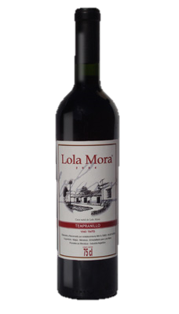
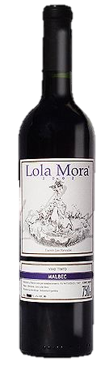
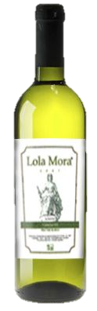

VINOS LOLA MORA
Tempranillo
El vino Tempranillo Lola Mora, producto de una cuidadosa selección y armoniosa combinación, se presenta bajo un aspecto brillante, de color carmín y destellos púrpura, y aroma a frutas frescas. Ideal para combinar con carnes rojas, quesos y pastas. Junto al Tempranillo, encontramos la Casa Natal de Lola Mora, como símbolo de nacimiento, de frescura, de vitalidad y de una riqueza histórica que se visualiza desde los más tempranos orígenes.
Malbec
Malbec es la variedad más cultivada en Francia y la encontramos en los mejores y más famosos viñedos. Variedad de racimo mediano, de forma piramidal, ramoso, poco compacto y con granos pequeños, cilíndricos de color negro. Gran Vino Fino Tinto de buen cuerpo y volumen, destaca taninos dulces y fruta madura. Acompaña a este vino la figura de la "Fuente de las Nereidas", obra que revela a una artista madura y creativa, audaz y admirada
Torrontes
El Torrontés Riojano presenta gran complejidad, estructura y cuerpo, sin dejar de ser suave y aterciopelado. Esta variedad es reconocida a nivel mundial como una uva con caracteres propios de la Argentina. Si bien su origen europeo, el tiempo, la tierra y el clima argentino le dio un carácter propio y distintivo. Acompaña a este vino la figura de la obra “La justicia” de Lola Mora, en la que contemplamos la complejidad y la sutileza, la intensidad y el equilibrio logrado por la artista.
Jamones Lola Mora

El Jamón Crudo Serrano Lola Mora es un jamón con sabor propio, aroma natural y rico, que se saborea mejor cuando está recién cortado de la pata o pernil, con un cuchillo adecuado y en lonchas cuanto más finas, mejor. El espectáculo de su entrevetado brillante estimula el apetito hasta al más desganado.